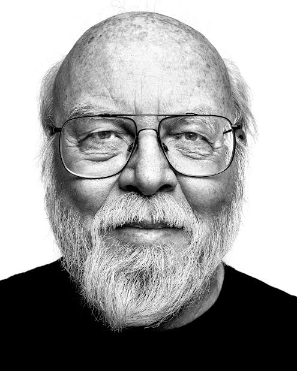

Front-End
HTML
CSS
JavaScript
React
Vus.js
Back-End
Node.js
Python
Java
PHP
Ruby

James Gosling
Java
Créateur de Java, un langage utilisé pour le développement web, les applications mobiles et les systèmes embarqués.
Guido Van Rossum
Python
Créateur de Python, un langage connu pour sa simplicité et utilisé dans le développement web, les sciences des données et l'IA.
Brendah EIch
JavaScript
Créateur de JavaScript, un langage incontournable pour le développement front-end des sites web modernes.

Dennis RItchie
C
Créateur du langage C, qui a influencé de nombreux autres langages, notamment C++, Java et Python.